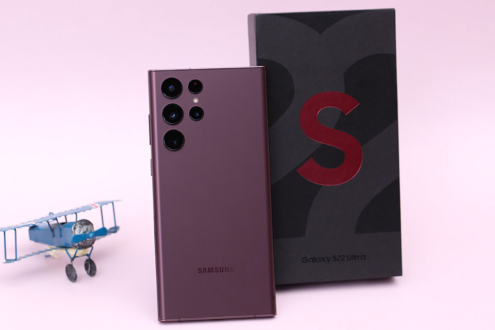

Điện thoại Samsung Galaxy S22 Ultra 5G 256GB

Giá niêm yết:33.990.000₫
Samsung Galaxy S22 Ultra 256GB - chiếc điện thoại Galaxy S đầu tiên sở hữu bút S Pen trong thân máy, được cung cấp sức mạnh bởi CPU đến từ Qualcomm, sở hữu thiết kế sang trọng, màn hình có nhiều cải tiến cùng cụm camera zoom 100x.
Thiết kế khác biệt hoàn toàn thế hệ trước
Samsung Galaxy S22 Ultra 256GB ra mắt với một diện mạo “cũ mà mới”, máy sử dụng form thiết kế của dòng Galaxy Note trước đây để đưa vào dòng Galaxy S. Với hai cạnh trên và dưới vát phẳng, hai cạnh bên được bo cong mềm mại.
Đây cũng là một chiếc smartphone vô cùng bền bỉ khi khung viền được cấu thành từ Armor Aluminum cứng cáp, khả năng kháng bụi, nước chuẩn IP68 và đây cũng là một trong những sản phẩm được trang bị kính Corning Gorilla Glass Victus+ đầu tiên trên thị trường.

Mặt lưng hoàn thiện nhám, màu sắc khá sang và có khả năng hạn chế bám
vân tay tốt, máy có các phiên bản màu như: Xanh lá, đỏ rượu vang và 2
màu truyền thống là đen và bạc.
Galaxy S22 Ultra cho cảm giác cầm nắm khá thích, trọng lượng vừa phải, không bị cấn tay nhưng nếu cầm trần thì cảm giác hơi dễ trượt vì kích thước máy khá là lớn.
Thiết kế cụm camera trên máy cũng là một điểm nhận dạng Galaxy S22 Ultra năm nay khác biệt so với dòng Note, cụm camera không còn quá lồi nữa giúp cho máy không bị kênh nhiều khi đặt trên mặt phẳng.